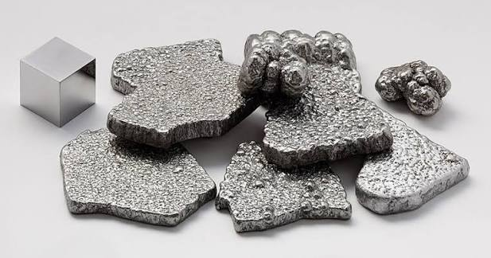

DESARROLLADOR PRINCIPAL
Autor: (Pon tu nombre aquí)
Grado: 3ero "I" | I.E. Nicolás La Torre (JLO)
El Platino Pt 78
¿Qué es el Platino?

El Platino es un metal de transición precioso, denso, maleable y de color blanco grisáceo. Es famoso por ser uno de los elementos menos reactivos del planeta y por su extrema resistencia a la corrosión, incluso a altas temperaturas.
Es tan raro en la corteza terrestre que toda la cantidad extraída en la historia humana cabría en una habitación pequeña, haciéndolo extremadamente valioso.
Ficha Técnica de Identificación
- Símbolo Químico: Pt
- Número Atómico: 78
- Grupo y Período: Grupo 10, Período 6
- Estado Físico: Sólido (Punto de fusión: 1768.3 °C).
- Categoría: Metal de transición / Metal noble.
Usos e Impacto en la Industria

Más allá de la joyería de alta gama, el platino es clave en la industria química y automotriz. Se utiliza en los convertidores catalíticos para transformar gases tóxicos en emisiones menos nocivas, y en la medicina para producir medicamentos de quimioterapia como el cisplatino.
⚠️ Riesgo Toxicológico y Precauciones
En su forma metálica pura es completamente inerte y seguro. Sin embargo, los compuestos solubles o sales de platino pueden provocar una reacción alérgica grave llamada platinosis, causando irritación en la piel y asma bronquial.